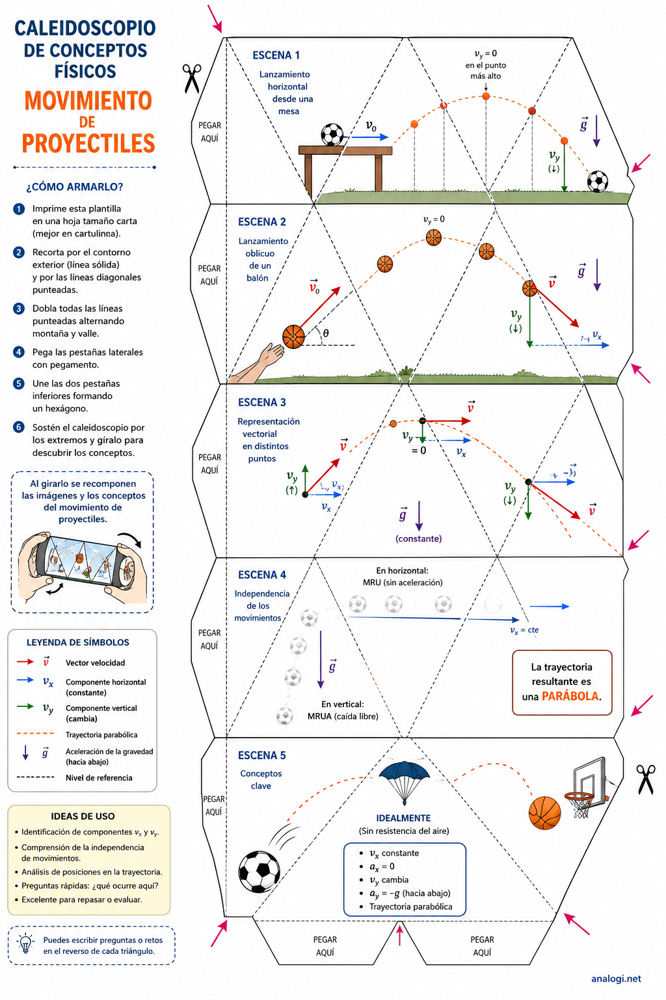
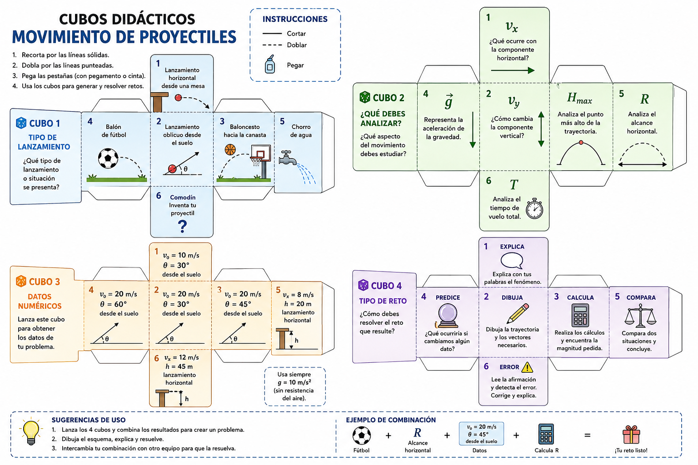
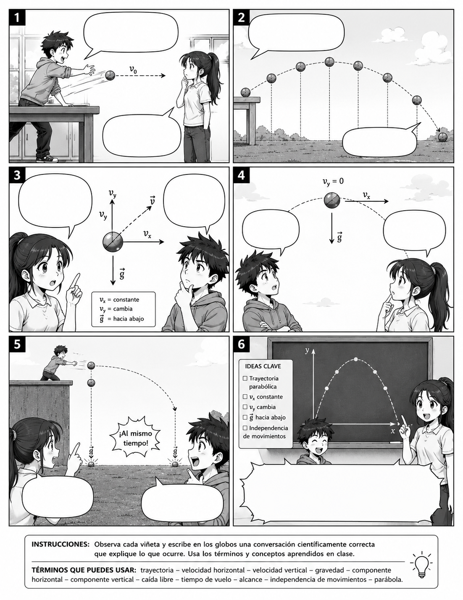
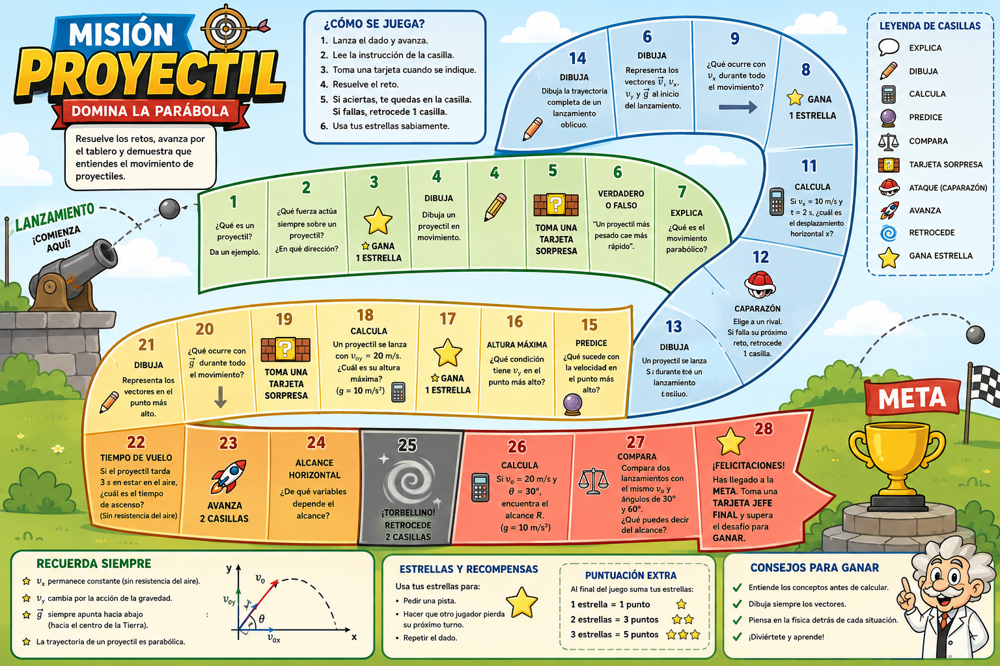
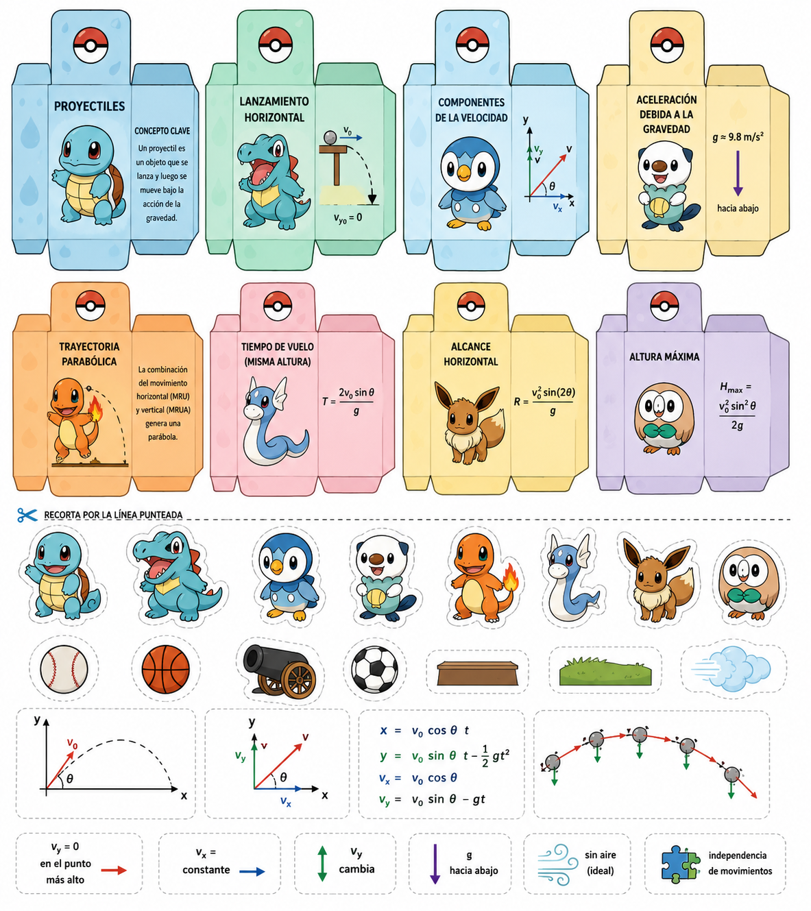

PapercraftCaleidoscopio de conceptos
Plantilla manipulativa para identificar trayectoria, componentes de velocidad, gravedad e independencia de movimientos.
Catálogo de materiales gráficos y fichas listas para preparar la clase.

PapercraftPlantilla manipulativa para identificar trayectoria, componentes de velocidad, gravedad e independencia de movimientos.
Retos conceptuales, de predicción, cálculo y razonamiento, con clave de respuestas para uso docente.

PapercraftCuatro cubos para combinar situación, variable física, datos y tipo de reto.

CómicSeis viñetas para construir explicaciones científicas a partir de una secuencia visual.

Juego de mesaTablero de repaso gamificado con explicación, cálculo, predicción y errores conceptuales.

Referencia visualModelo de estructura para cajas temáticas con conceptos, piezas y distractores.
Infografía general de la dinámica con reloj de 8 posiciones, árbitro científico, puntuación, variantes y evaluación.
8 preguntas básicas, 8 intermedias y 8 avanzadas con clave para el árbitro científico.
Plantilla para registrar lanzador, posición, enceste, respuesta, justificación, total y observaciones.
Los recursos HTML imprimibles incluyen un botón de impresión y se adaptan a Carta/A4. Para plantillas PNG, abre la imagen a tamaño completo y evita recortar las pestañas.
Sugerencia: imprime las fichas de juego en cartulina y plastifícalas si se usarán varias veces.